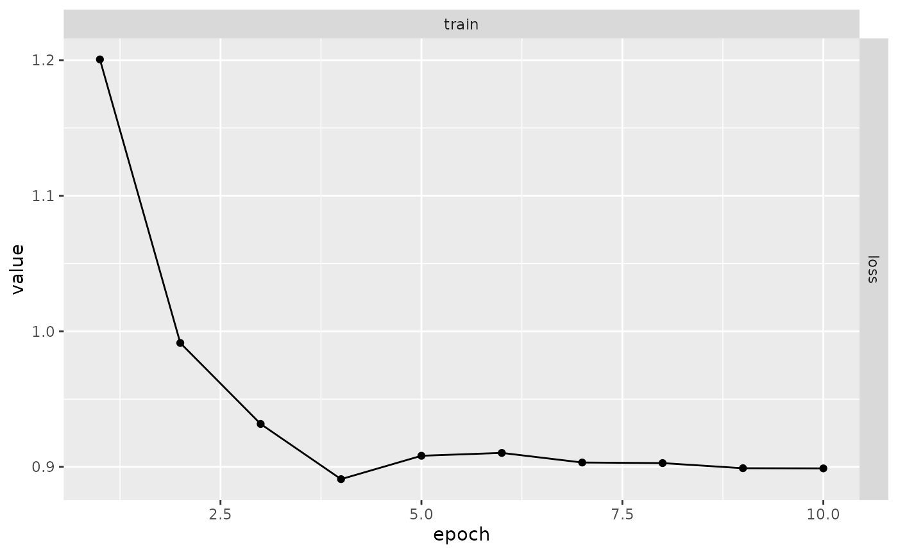
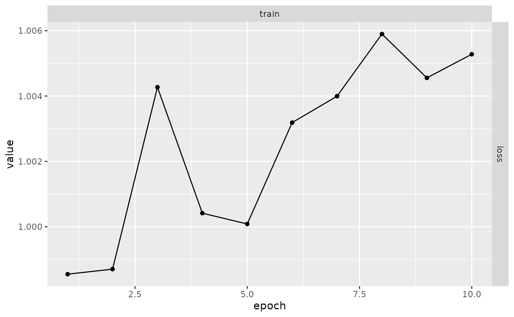

Sauvegarder des instantannés de vos modèle
Source :vignettes/articles/checkpoints.Rmd
checkpoints.RmdLorsque vous entraînez des modèles qui prennent beaucoup de temps, vous souhaitez peut-être enregistrer l’état intermédiaire du modèle sur disque. Ainsi, si quelque chose se passe mal pendant l’apprentissage (par exemple, un processus annihilé, une coupure réseau, un manque de mémoire, etc), vous pourrez reprendre l’entraînement à partir là où il s’est arrêté.
Vous pouvez aussi avoir besoin des états intermédiaires pour évaluer le modèle à différents moments de l’apprentissage, par exemple comparer les résultats après 10 époques et après 30 époques.
Cet article décrit les fonctionnalités de luz qui sont conçues à cet
effet. Ces fonctionnalités sont facultatives et sont activées seulement
si vous ajoutez des callbacks spécifiques à votre appel à
fit.
Relancer des apprentissages qui ont échoués
Si vous avez un long processus d’apprentissage qui peut échouer pour
n’importe quelle raison (ordinateur coupé, noeud d’un cluster perdu,
etc), il est recommandé d’ajouter luz_callback_autoresume()
à votre liste de callbacks.
luz_callback_autoresume() sauvegardera automatiquement
tout l’état de votre modèle à la fin de chaque époque. Si quelque chose
se passe mal pendant l’apprentissage, vous pouvez simplement relancer le
même script, sans aucun changement, le dernier instantanné du modèle
sera rechargé et l’apprentissage reprendra là où il s’est arrêté.
Par exemple, prennons un jeu de données d’entraînement aléatoire
généré et un modèle linéaire pour montrer comment fonctionne
autoresume.
Voici les données d’entraînement :
x <- torch_randn(1000, 10)
y <- torch_randn(1000, 1)Et la définition du modèle :
model <- nn_linear %>%
setup(optimizer = optim_sgd, loss = nnf_mse_loss) %>%
set_hparams(in_features = 10, out_features = 1) %>%
set_opt_hparams(lr = 0.01)Voici comment créer un callbacks qui simule une erreur
aléatoire. Ce callbacks lève juste une erreur d’exécution R
à la 5ème époque d’apprentissage du modèle.
interrupt <- luz_callback(
"interrupt",
failed = FALSE,
on_epoch_end = function() {
if (ctx$epoch == 5 && !self$failed) {
self$failed <- TRUE
stop("Error on epoch 5")
}
}
)Ccommençons par entraîner en ajoutant le
luz_callback_auto_resume():
autoresume <- luz_callback_auto_resume(path = "state.pt")
inter <- interrupt()
# Une erreur se produira à la 5ème époque et le modèle sera arrêté.
results <- model %>% fit(
list(x, y),
callbacks = list(inter, autoresume),
verbose = FALSE
)
#> Error in get(paste0(generic, ".", class), envir = get_method_env()) :
#> objet 'type_sum.accel' introuvable
#> Error in `FUN()`:
#> ! Error while calling callback with class <interrupt/LuzCallback/R6> at
#> on_epoch_end.
#> Caused by error in `self[[callback_nm]]()`:
#> ! Error on epoch 5Pour relancer l’apprentissage du modèle exactement là où il s’est
arrêté, vous n’avez qu’à relancer la fonction fit() avec le
même modèle, les callbacks, etc. :
Ainsi, le processus l’apprentissage du modèle continuera exactement là où il s’est arrêté. Les registres (de métriques et de pertes), l’optimiseur et l’état du modèle sont récupérés à partir de l’état précédent pour avoir les résultats complets :
plot(results)
Sauvegarde automatique
Si vous désirez avoir un contrôle plus fin sur la façon dont les
sauvegardes sont gérées, vous pouvez utiliser
luz_callback_model_checkpoint() pour enregistrer des
sauvegardes dans un fichier ou un répertoire spécifié.
Essayons d’utiliser le même exemple que dans la section précédente : Nous générerons d’abord quelques données.
x <- torch_randn(1000, 10)
y <- torch_randn(1000, 1)Définissons à nouveau notre modèle :
model <- nn_linear %>%
setup(optimizer = optim_sgd, loss = nnf_mse_loss) %>%
set_hparams(in_features = 10, out_features = 1) %>%
set_opt_hparams(lr = 0.01)Entraînons maintenant le modèle en utilisant
luz_callback_model_checkpoint().
checkpoint <- luz_callback_model_checkpoint(
path = "checkpoints/",
monitor = "train_loss"
)
results <- model %>% fit(
list(x, y),
callbacks = list(checkpoint),
verbose = FALSE
)Vous pouvez maintenant voir que le répertoire
checkpoints contient des fichiers avec des sauvegardes de
l’état pour chaque epoch. Par défaut,
luz_callback_model_checkpoint enregistrera l’état pour
chaque epochs et formattera le nom en y incluant la valeur de la perte.
Ce formattage peut être configuré dans le paramètre path, voir
?luz_callback_model_checkpoint pour plus de détails.
fs::dir_ls("checkpoints")
#> checkpoints/epoch-01-train_loss-1.237.pt
#> checkpoints/epoch-02-train_loss-1.065.pt
#> checkpoints/epoch-03-train_loss-1.026.pt
#> checkpoints/epoch-04-train_loss-1.004.pt
#> checkpoints/epoch-05-train_loss-1.004.pt
#> checkpoints/epoch-06-train_loss-1.005.pt
#> checkpoints/epoch-07-train_loss-0.999.pt
#> checkpoints/epoch-08-train_loss-0.998.pt
#> checkpoints/epoch-09-train_loss-1.001.pt
#> checkpoints/epoch-10-train_loss-1.002.ptEnfin, vous pouvez charger une sauvegarde spécifique dans le modèle
entrainé à l’aide de luz_load_checkpoint. Notez que la
chargement de la sauvegarde dans un module fitted remplace
les poids sur le modèle en mémoire.
luz_load_checkpoint(results, fs::dir_ls("checkpoints")[1])Vous pouvez ensuite commencer à faire des prédictions ou évaluer votre modèle avec les poids tout juste chargés.
Si vous voullez démarrer une nouvelle époque d’apprentissage depuis
une sauvegarde, vous pouvez utiliser
luz_callback_resume_from_checkpoint() . Par défaut, il
n’aura enregistré que les poids du modèle dans le fichier de sauvegarde,
mais vous pouvez configurer pour restorer aussi les registres,
callbacks et états de l’optimiseur. Si le répertoire des
sauvegardes existantes est indiqué, alors l’apprentissage reprendra à
partir du dernier fichier de sauvegarde renvoyé par
fs::dir_ls.
Voici comment utiliser ce callbacks :
resume <- luz_callback_resume_from_checkpoint(path = "checkpoints/")
results <- model %>% fit(
list(x, y),
callbacks = list(resume),
verbose = FALSE
)
plot(results)
États des callbacks personnalisés
Parfois, les rappels ont également besoin de conserver leurs états
internes afin de continuer l’apprentissage exactement à partir là où il
s’est arrêté. Dans ce cas, les callbacks peuvent mettre en
œuvre les méthodes state_dict() et le
load_state_dict() qui sont appelées automatiquement lors
des sauvegardes et rechargements.
Par exemple, imaginez que vous avez crée un callbacks
qui suit les gradients des poids du modèle à chaque epoch. Vous voulez
utiliser les poids suivis pour analyser plus en profondeur la procédure
d’apprentissage. Ce rappel pourrait être configuré comme suit:
cb_weight_grad <- luz_callback(
"weight_grad",
gradients = list(),
initialize = function(track_weights) {
self$track_weights
},
on_train_batch_before_step = function() {
gradients[[ctx$epoch]] <- list()
for (w in self$track_weights) {
gradients[[ctx$epoch]][[w]] <- self$model$parameters[[w]]
}
}
)Dans l’exemple ci-dessus, le champ gradients est un
état dans le callbacks. Si l’apprentissage
échoue pour une raison quelconque, les états seront perdues.
Nous pouvons le rendre persistant en utilisant les méthodes
state_dict() et load_state_dict() comme suit
:
cb_weight_grad <- luz_callback(
"weight_grad",
gradients = list(),
initialize = function(track_weights) {
self$track_weights
},
on_train_batch_before_step = function() {
gradients[[ctx$epoch]] <- list()
for (w in self$track_weights) {
gradients[[ctx$epoch]][[w]] <- self$model$parameters[[w]]
}
},
state_dict = function() {
list(gradients = self$gradients)
},
load_state_dict = function(d) {
self$gradients <- d$gradients
}
)